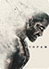

Hugh Jackman
Actor | Producer
VIDEOS & PHOTOS All 5 Videos & 245 Photos


filmography Full Filmography

- X-Men: Apocalypse
logan
...2016

- Eddie the Eagle
Bronson Peary
...2015

- Me and Earl and the Dying Girl
Hugh Jackman
...2015

- Night at the Museum 3
Hugh Jackman
...2014

- X-Men: Days of Future Past
Wolverine
...2012
- 
- The Wolverine
logan
...2011
- Rise of the Guardians
bunny
...2011

- The Prestige
Robert Angier
...2010
Fullname:
Hugh Jackman
Date of Birth:
June 24, 1982
Country:
Australian
Height:
186 cm/p
Biography of Hugh Jackman
Hugh Michael Jackman is an Australian actor, singer, multi-instrumentalist, dancer and producer. Jackman has won international recognition for his roles in major films, notably as superhero, period, and romance characters. He is best known for his long-running role as Wolverine in the X-Men film series, as well as for his lead roles in the romantic-comedy fantasy Kate & Leopold (2001), the action-horror film Van Helsing (2004), the drama The Prestige and The Fountain (2006), the epic historical romantic drama Australia (2008), the film version of Les Misérables (2012), and the thriller Prisoners (2013). His work in Les Misérables earned him his first Academy Award nomination for Best Actor and his first Golden Globe Award for Best Actor - Motion Picture Musical or Comedy in 2013. In Broadway theatre, Jackman won a Tony Award for his role in The Boy from Oz. A four-time host of the Tony Awards themselves, he won an Emmy Award for one of these appearances. Jackman also hosted the 81st Academy Awards on 22 February 2009. Jackman was born in Sydney, New South Wales, to Grace McNeil (Greenwood) and Christopher John Jackman, an accountant. He is the youngest of five children. His parents, both English, moved to Australia shortly before his birth. He also has Greek (from a great-grandfather) and Scottish (from a grandmother) ancestry. Jackman has a communications degree with a journalism major from the University of Technology Sydney. After graduating, he pursued drama at the Western Australian Academy of Performing Arts, immediately after which he was offered a starring role in the ABC-TV prison drama Correlli (1995), opposite his future wife Deborra-Lee Furness. Several TV guest roles followed, as an actor and variety compere. An accomplished singer, Jackman has starred as Gaston in the Australian production of "Beauty and the Beast." He appeared as Joe Gillis in the Australian production of "Sunset Boulevard." In 1998, he was cast as Curly in the Royal National Theatre's production of Trevor Nunn's Oklahoma. Jackman has made two feature films, the second of which, Erskineville Kings (1999), garnered him an Australian Film Institute nomination for Best Actor in 1999. Recently, he won the part of Logan/Wolverine in the Bryan Singer- directed comic-book movie X-Men (2000). In his spare time, Jackman plays piano, golf, and guitar, and likes to windsurf. On turning down the chance to play Richard Gere's character in the Harvey Weinstein-produced film Chicago (2002): I thought I was too young for the role. You have some 34-year-old guy up against Catherine Zeta-Jones and Renée Zellweger and it becomes a different movie. At one point, Harvey was telling me they were thinking of Kevin Spacey, and Ivtold him, 'That's exactly right. You should hire him.' Then I was in New York when the movie opened and the queue was around the block. I sat down and thought that I had probably made the biggest mistake. But I still honestly think that it was the right thing to do. I still think I was too young for that part.